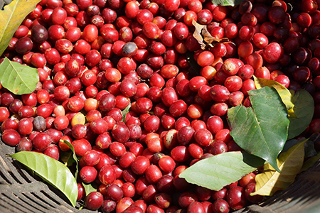

什麼是咖啡櫻桃?
咖啡樹為了傳宗接代，因此會生長出咖啡果實，咖啡果實是鮮紅色的，且由於外觀類似櫻桃的形狀，因此又被稱為「咖啡櫻桃」。 img_20140109093504 我們製作咖啡時所利用的咖啡豆，其實是咖啡果實內部的種子。在種子外層有外果皮、果肉、果膠、內果皮與銀皮等構造，而加工處理的目的就是為了去除這些外部的構造，以取得內部的咖啡種子。 日曬法 _67072652_merchants_getty624 日曬法是最古老的處理方法，據文獻記載，最早在西元11世紀1000多年前的阿拉伯人，就開始使用日曬法處理咖啡果實。因為咖啡的提神效果，當時咖啡從阿拉伯世界傳入西方時還被稱為“阿拉伯人的葡萄酒”。 處理過程 312 1. 去除浮豆 將咖啡豆倒入大水槽之中，發育不完全的劣質豆會浮上水面，成熟飽滿的果實則會沉入水底，此時將水面上的浮豆撈除，即完成去除浮豆的步驟。 8380217324_46e6ba1360_o1 2. 日曬 將咖啡果實均勻的鋪在曝曬場之中，且每日需翻動數次。這個過程通常持續2~3周左右，依當地氣候而定，在咖啡豆內部的含水量降至10~14%時，即完成日曬的步驟。 image 3. 去除外殼 在日曬結束之後，咖啡種子的外層已乾硬，此時利用脫殼機去除外殼即完成日曬法的處理步驟。 優點: 日曬法在除了去除浮豆的步驟之外，都不需要用到水，且一桶水就可重複使用，成本低廉，因此在水資源不豐富與較不富裕的地區被廣泛使用。 缺點: 1.日曬法由於必須將咖啡豆放置在室外，因此常常有許多枯枝落葉等雜質摻於其中。 2.因為是利用太陽的能量，咖啡豆的乾燥程度不易控制，導致咖啡果實會發生「曬過頭」的情況，內部咖啡豆因此而有破損。 3.在日曬的過程中，由於果肉並未被去除，因此常常會出現發霉、腐壞的情況。 123 風味: 因為日曬法是讓咖啡果實自然乾燥，咖啡豆得以在果實內部自然熟成，不會受到外在環境的干擾，因此日曬法所處理的咖啡豆會將本身的風味放大，醇度濃厚，風味濃烈，且會散發出甜味。 你可能會喜歡： 藝文咖必收藏！精選【大稻埕】10家復古咖啡店☕帶你走進濃濃懷舊時光 藏在安靜巷弄中的咖啡香｜10間超適合放鬆一下午的永康街咖啡店 水洗法 由於日曬法缺點過多，因此發明了水洗法。水洗法是目前最為廣泛使用的處理方式，與日曬法最大的不同是利用發酵去除果膠層。 處理過程 1. 去除浮豆(同日曬法) 將咖啡豆倒入大水槽之中，發育不完全的劣質豆會浮上水面，成熟飽滿的果實則會沉入水底，此時將水面上的浮豆撈除，即完成去除浮豆的步驟。 333 2. 去除果皮與果肉 透過果肉篩除機(pulping machine)，將咖啡果實的外果皮與果肉去除。(會留下果膠、內果皮與銀皮)。 0bsthc06 3. 發酵 這個步驟的目的是要利用生物處理的方法，將果膠去除。將經過果肉篩除機處理的咖啡果實，放入發酵槽16~36小時，發酵菌會溶解掉果膠。 7-160425155335s7 4. 水洗 在完成發酵、去除果膠後，由於發酵菌與雜質會殘留在咖啡豆上，因此會再清洗一次咖啡豆。為了要清洗乾淨，這一個步驟會消耗大量的清水。 photo-1-2-jpg-pagespeed-ce-pj68tkcpbk 5. 乾燥與去除內果皮、銀皮 通常會利用機器(或曬乾)將咖啡果實烘乾，讓水分含量降到10~14%。接著利用脫殼機去除剩餘的內果皮與銀皮，即完成加工處理。 優點: 1.水洗法所有的處理程序都在室內，因此能讓咖啡豆中的雜質降到最低，品質最高。 2.由於一開始就去除了果肉，因此完全不需要像日曬法一樣，擔心發霉的問題。 3.外觀較為完整，賣像極佳。 缺點: 1.程序複雜且繁瑣，因此成本較日曬法高出許多。 2.會用到大量的清水，要取得1公斤的咖啡豆需要消耗40~50公升的清水，因此在水資源缺乏的地區較少使用。 風味: 由於經過發酵，因此咖啡豆通常都會帶有明亮的酸味與果香。 你可能會喜歡： 剛開幕就引爆IG洗版潮【比童話故事還童話】的咖啡店 少女必朝聖！ 義式濃縮、手沖單品、虹吸壺、摩卡壺？ 一次搞懂千變萬化的咖啡沖煮法！ 蜜處理法(半日曬法) 1467710672-607968784 半日曬法是日曬法的改良方法，與日曬法最主要的差異是在於，會在日曬前先去除外果皮與果肉，在保留果膠層之下，直接進行日曬。而哥斯大黎加相當著名的蜜處理法也算是半日曬法。 處理步驟 1. 去除浮豆(同日曬法) 將咖啡豆倒入大水槽之中，發育不完全的劣質豆會浮上水面，成熟飽滿的果實則會沉入水底，此時將水面上的浮豆撈除，即完成去除浮豆的步驟。 2. 去除果皮與果肉(同水洗法): 透過果肉篩除機(pulping machine)，將咖啡果實的外果皮與果肉去除。(會留下果膠、內果皮與銀皮)。 maxresdefault 3.日曬: 將帶有果膠的咖啡豆，鋪在曝曬場直接進行曝曬，使含水量降到10~14%。 4.去除果膠、內果皮 以特殊機器，去除果膠與內果皮，即完成處理步驟。 優點: 1.屬於日曬法的改良方法，由於在一開始就去除了果肉，因此不會有發霉的問題產生。 2.不需耗費大量清水，成本較低。 缺點: 處理步驟可以說是所有方式中最為複雜、最為費工的。 monte-copey-mill5 風味: 蜜處理法的咖啡豆風味較佳，酸味與甜味均衡，且同日曬法因為有經過日曬，咖啡豆本身的香氣也會被放大，醇味濃厚。 你可能會喜歡： 頂尖業務、設計師最推 10個台北超適合工作的咖啡廳大公開！ 還在喝星星咖啡嗎？ 5分鐘破解品牌迷思 教你如何判別一杯義式咖啡的好壞！ 其它方法 除了利用上述幾種精製方式之外，也有利用生物消化道內的酵素與消化液來進行咖啡生豆處理(簡單來說就是把咖啡豆大出來…)。目前已知能被利用在這種處理方式上的生物有大家耳熟能詳的麝香貓及肉垂鳳冠鴙，印度的某個莊園也有利用獼猴來進行咖啡處理的，但產量不高，仍屬稀有。